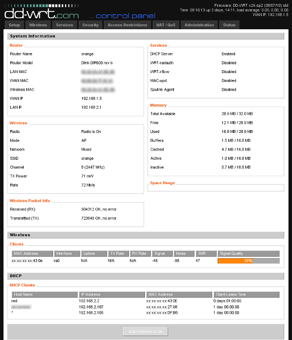

Home, Sweet Home
I often wish I could tunnel my traffic through some trusted SSH server. Sometimes for privacy, sometimes because of security (firewalls). I've only had one one problem with this - I had no trusted SSH server. Once I got an old PC (Intel Celeron 466MHz with 64MB of RAM and 4GB hard disk) and installed Linux with OpenSSH on it. It worked, but ...
Having a whole PC machine, just to tunnel through SSH didn't seem an effective approach. It was relatively big. It was quite noisy. It had no UPS, so power failures were a problem. After a while I decided it's not worth it. I turned it off and switched to free shell accounts. Not so trusted, but much more convenient.
A few weeks ago, I stumbled upon OpenWrt project. That was enlightening.
Now I can tunnel my traffic through SSH using a home router with Linux. It was easy to set up and cheap. And I needed a router at home anyway. I have a basic Linux-like system, and the most interesting for me: OpenSSH. Also, it is small, quiet, power effective and reliable.
Setup
There are two popular Linux-based firmware projects for routers: OpenWrt and DD-WRT. The first thing you have to do is to pick the one you want. Check supported hardware before you decide. After this you have to do flashing. The process might be different for different routers. Basically, you must download the firmware for your machine and upload it to its memory. On some routers it's as easy as clicking a button on the web interface. On others, you have to connect through a serial cable. You can find detailed instructions for specific brands on OpenWrt and DD-WRT websites.
After flashing your router, you'll see a new web interface. You can see an example in Figure 1.
Figure 1: Home page of DD-WRT D-Link DIR-600 web interface
You should set up your password, networks, etc. Then, turn on SSH. You can do this in the 'Services' tab. You can also turn on/off SSH password logins and TCP forwarding, and specify a non-standard port for the service. If you decide to use key-based authentication (which is usually a good decision), you'll need to paste your public key here also.
To be able to log in from the Internet, you have to turn on remote access for SSH. You can do this in the Administration/Management tab. You can also specify the range of IPs that you want to be able to log in from.
The last important thing is that you can only log in as root, even if you created other users earlier. If everything went well, after giving your credentials, you should see a basic shell prompt.
Example usage
Now, to tunnel your traffic, you can set up the SOCKS proxy. Assuming that your router is accessible at router.home.org, you can run:
ssh -D 8888 root@router.home.org
If you just want to setup proxy and not log into shell, try the -N switch:
ssh -ND 8888 root@router.home.org
After you type your password, a SOCKS proxy will be listening on port 8888 on your localhost. Any application that can communicate with the SOCKS proxy can use it. One example is a web browser: if you're using Firefox, check out the FoxyProxy extension. This will let you switch between proxied and direct connections instantly.
For applications that don't support the SOCKS proxy directly, you may use tsocks as an additional layer. This little utility is used from the command line, and allows any program to use your proxy even if it doesn't have native SOCKS support. An example configuration of tsocks would be /etc/tsocks.conf:
server=localhost
server_port=8888
local=192.168.0.0/255.255.255.0
The above configuration sets up a proxy server for localhost with port 8888 (made earlier with SSH) and excludes 192.168.0.0/255.255.255.0 network from proxying. An example of tsocks usage:
tsocks thunderbird
Summary
Setting up the whole thing took me about half an hour. Mainly because I set up a user account and was unaware of the login-only-as-root "feature".
Now I can say that, in contrast to the old PC, the home router with an SSH server is the perfect solution for me. If only I could get a faster internet connection!
| Share |

|
Talkback: Discuss this article with The Answer Gang
![[BIO]](../gx/2002/note.png)
Marcin Teodorczyk specializes in Linux security. In his spare time, he does rock climbing and occasionally writes articles for IT related magazines.